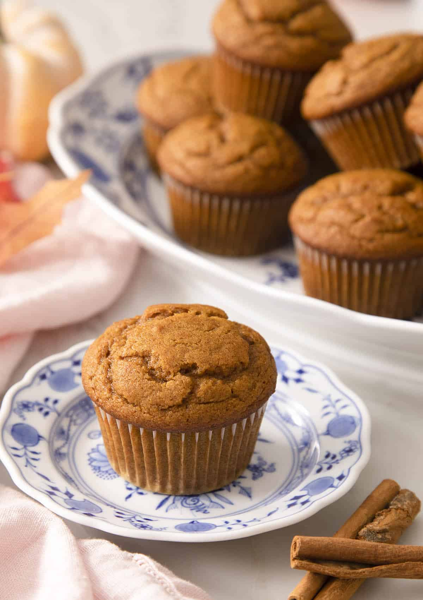

Pumpkin Muffins

Description
These soft and tender pumpkin muffins come together in just a few minutes and will stay soft for days! They're perfectly sweet, loaded with all your favorite fall spices, and of course lots of pumpkin flavor.
These pumpkin muffins are a perfect fall treat but I make them ALL YEAR round. I love the spices and melt in your mouth texture, they’re really the perfect breakfast treat or perfect snack. If you’re in the mood for more pumpkin breakfast recipes, then try out my baked pumpkin donuts or pumpkin scones.
Ingredients
- 180g all-purpose flour
- 1 teaspoon baking soda
- 1/2 teaspoon baking powder
- 1/2 teaspoon salt
- 1 1/2 teaspoons cinnamon
- 1/2 teaspoon allspice
- 1/4 teaspoon ground ginger
- 1/4 teaspoon nutmeg
- 2 large eggs
- 100g brown sugar
- 100g white sugar
- 60ml whole milk
- 280g pumpkin puree
- 120ml oil
- 1 teaspoon vanilla extract
Steps
- Combine the flour, salt, baking powder, baking soda, and spices to a large bowl then whisk together until combined and set aside
- Add the oil, milk, eggs, vanilla, granulated and brown sugars to a large bowl then whisk together. Add in the pumpkin puree and mix once more until smooth.
- Pour the wet into the dry and mix until just combined.
- Transfer the batter to your lined muffin tin filling each paper about 3/4 the way up.
- Bake at 215C for 5 minutes then reduce temperature to 175 and bake an additional 15 min or until a skewer inserted in the center comes out clean